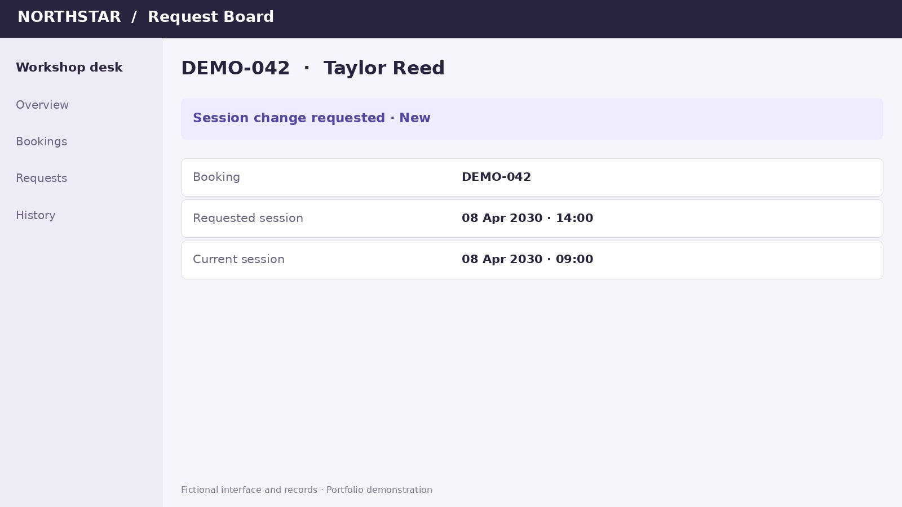

Search using the participant’s Booking code and select the matching result.
Request Board label review
Overview
Request Board label review
Confirm the context.
Use the most recent label.
This demo begins after Booking Desk shows the booking is New. It shows exactly where the Request Board banner and Routing Tags table appear and how to identify the most recent routing label.
Layer 1 prerequisite: confirm the booking shows the New banner in Booking Desk. Only New proceeds to the Request Board label review.
Booking Desk first—confirm New before opening Request Board
Wait for the page—do not use a partially loaded screen
Compare Updated dates—never assume the first row is newest
Review only—carry the most recent label and sub-label to the eligibility matrix

1Open the participant in Request Board
2Wait for Booking Details
3Review the visible Request Board banner
4Wait for Routing Tags
5Use the most recent Updated entry
01
Open the correct participant
Open the matching participant result.
Confirm that Request Board begins opening the participant investigation.
The banner and Routing Tags table are reviewed from this participant’s Booking Details page.
Watch for: the selected result matches the Booking code used in the search. Continue unlocks after the key action plays.
02
Let the page finish
Wait for Booking Details to load.
Allow the participant details and expandable sections to appear before reviewing anything.
The Booking Details tab, the visible Request Board banner, and the Routing Tags section are present.
Do not make an eligibility decision while the screen is blank or still loading.
Watch for: the complete Booking Details layout appears before the next review step. Continue unlocks after the key action plays.
03
Check the context
Review the visible Request Board context banner.
The visible yellow banner appears near the top of Booking Details above the expandable sections.
Read the banner for investigation context before reviewing the Routing Tags history.
The banner provides context. The most recent Routing Tags entry is the label used for the eligibility decision.
Watch for: the visible Request Board banner appears before the Routing Tags review. Continue unlocks after the key action plays.
04
Wait for Routing Tags
Let the Routing Tags table populate.
In the placeholder demonstration, Routing Tags populates as the page queries finish; no separate click is shown.
Continue only when the Routing Tags heading and the Updated, label, and sub-label columns are visible.
Do not read or use a label until the heading, columns, and row data are fully visible.
Watch for: Routing Tags finishes loading and the full heading remains unobstructed. Continue unlocks after the key action plays.
05
Identify the most recent entry
Compare every Updated timestamp.
The clip begins with the full page, then zooms into Updated, label, and sub-label so every visible timestamp can be compared.
Use the most recent entry. In this recording, March 8, 2030 at 10:00 AM is later than the other visible timestamps.
Carry that row’s label and sub-label to the eligibility matrix. Do not add, remove, or modify a routing label.
Watch for: the view zooms into Updated, label, and sub-label; compare all timestamps and use the most recent row. Continue unlocks after the key action plays.
Quick review
New → Request Board → banner → Routing Tags → most recent entry.
Booking Desk completes the booking-state pre-filter first. Request Board is then used to locate the visible context banner and the most recent routing user label.
Confirm New
Complete the Booking Desk pre-filter before Request Board.
Open Request Board
Open the matching participant and wait for Booking Details.
Read the banner
Confirm the investigation context.
Wait for Routing Tags
Make sure the heading and columns are visible.
Use the most recent entry
Compare Updated dates, then carry the label and sub-label to the eligibility matrix.
Key rule: use the most recent Updated entry—not the first row by default.
Walkthrough complete
You can now locate and review the most recent Request Board routing label.
Take the most recent row’s label and sub-label to the approved eligibility matrix, and keep the Request Board review read-only.